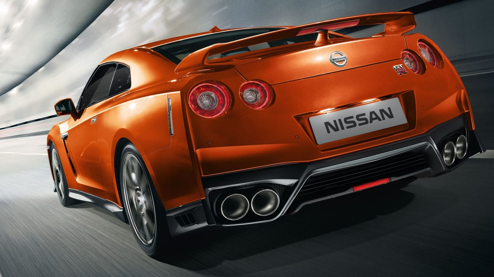
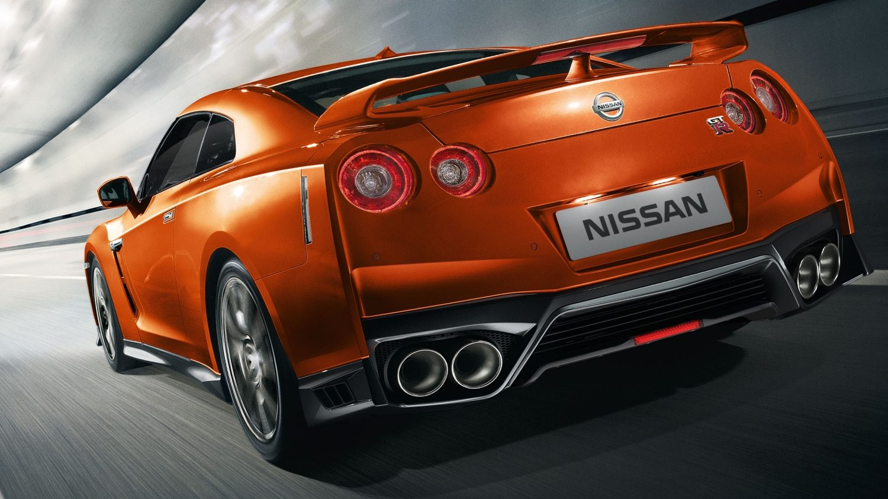
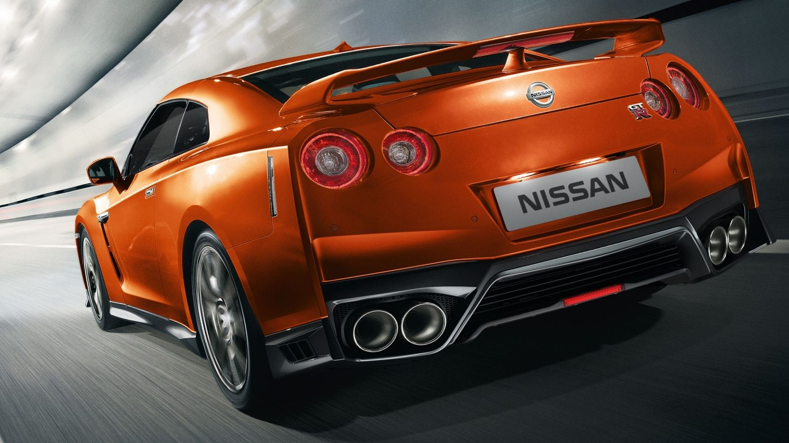
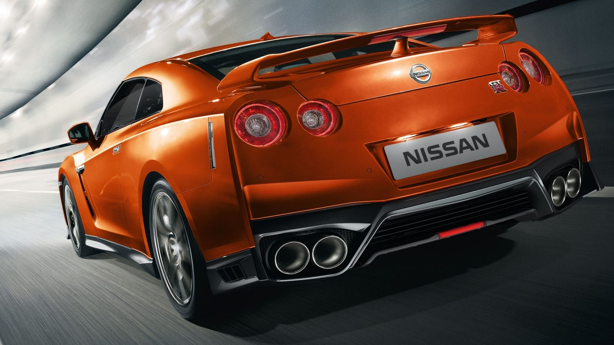

Nissan GTR
 



Nissan GT-R – dwudrzwiowe coupé firmy Nissan, zapowiedziane 6 grudnia 2007. Do sprzedaży międzynarodowej wszedł na początku czerwca 2008. Pod koniec 2010 roku przeszedł facelifting. W 2009 roku samochód zdobył tytuł World Performance Car of the Year[1]. Rocznie ma być wyprodukowane 12 000 sztuk. Producent jasno zadeklarował, że nie jest on następcą (mimo swojego podobnego wyglądu nadwozia oraz tylnych reflektorów), prawdopodobnie ostatniego z serii Skyline, R34 GT-R. Prace nad samochodem trwały od 2001 roku. Po zakończeniu produkcji modelu Skyline R34 w 2002 roku nastała 6-letnia przerwa. W 2003 roku powstał nieco odbiegający segmentem od poprzednika model V35. Był to pierwszy Skyline, który był sprzedawany w USA jako Infiniti G35. Nissan GT-R został oficjalnie zaprezentowany w 2007 roku, a wprowadzony do sprzedaży w 2008. W 2013 roku pojawił się Nissan GT-R Gentleman Edition, który bazuje na wariancie Black Edition i jest oferowany jedynie w szarym kolorze - Grey Squale. Na nadwoziu zamontowano plakietki z napisem "Gentleman Edition". We wnętrzu zmiany są niewielkie, zastosowano czerwoną tapicerkę skórzaną na fotelach, boczkach drzwi i desce rozdzielczej. Wewnątrz znajduje się plakietka z numerem seryjnym modelu w edycji specjalnej[2]. W listopadzie 2013 roku Nissan zaprezentował GT-R-a po liftingu. Samochód otrzymał nowy przód, pojawiło się również wiele modernizacji mechanicznych, w tym zawieszenia. Całkowitą nowością jest również wersja Nismo o mocy 591 KM[3].